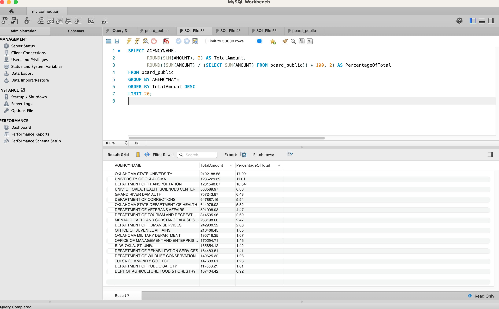
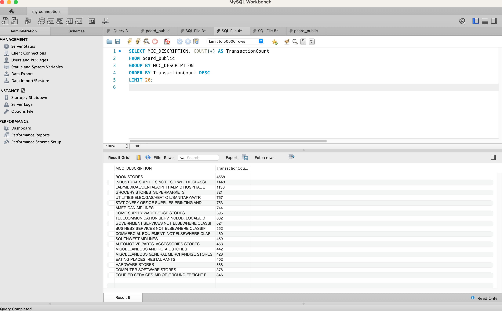
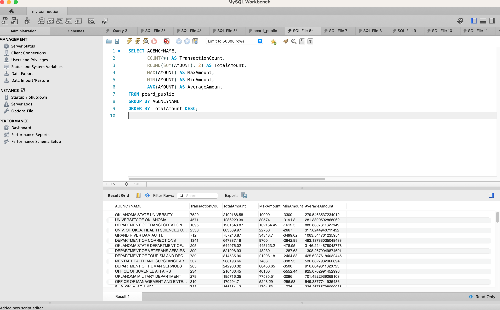

Project 1 - Washington State Electric Vehicle Analysis
In this SQL project, I leveraged the Washington State Department of Licensing's dataset on Battery Electric Vehicles (BEVs) and Plug-in Hybrid Electric Vehicles (PHEVs) to analyze and derive valuable insights by using MySQL.
The dataset used for this project can be found at catalog.data.gov/dataset/electric-vehicle-population-data. There are over 150,000 total vehicles in this dataset. Some of the interesting columns include: Model Year, Make, Model and Electric Vehicle Type.
The screenshot below shows the query I used to calculate the market share of the two electric vehicle types in the dataset.
In Washington State, the Battery Electric Vehicle (BEV), have a much bigger share of the market at 77.89%.

Next I looked into the marketshare for the Make of each vehicle, to see how much of it was taken by Tesla alone. When executing the below query, the output revealed that Tesla does take up a large 59.91% of the total electric vehicle market in Washington State shown below.
The next query presents data from just the Plug-in Hyprib Electric Vehicles (PHEVs), to see which are most popular models from that type.

Finally, I designed to a query to look at the model year. It calculated the total number, and percentage of vehicles for the last ten years.

Project 2 - Oklahoma Purchase Card Program Analysis
In this project, I conducted another analysis utalizing mysql.
The dataset used in the project can be found at catalog.data.gov/dataset/purchase-card-pcard-fiscal-year-2022-31015. It contains over 25,000 transactions.
This dataset contains information on purchases made through the purchase card programs administered by the state of Oklahoma and higher education institutions for the 2022 fiscal year.
The screenshot below shows the query I created which identifies the top 20 agencies with the highest total purchase amounts.
Additionally, it calculates the percentage of each agency's expenditure in relation to the overall spending.

The below query looks at transaction counts of MCC (Merchandise Category Code) descriptions, to find the most common merchandise categories and their corresponding transaction volumes.

In this next and final query, I looked more in detail into expenditure trends and patterns.

I used the COUNT(*) and SUM(AMOUNT) functions again as well as the MAX(AMOUNT) function which finds the maximum amount spent in a single transaction by each agency. This shows the highest individual expenditure for each agency.
The MIN(AMOUNT) function retrieved the minimum amount spent in a single transaction by each agency. This reveals lowest individual expenditure for each agency.
The AVG(AMOUNT) function calculated the average amount spent per transaction by each agency. This helps gives an understanding of the typical expenditure level for each agency.
By Creating the code for these quires, I hope to demonstrate my ability to extract meaningful insights from financial datasets, analyze transaction data, and provide potentially actionable information.